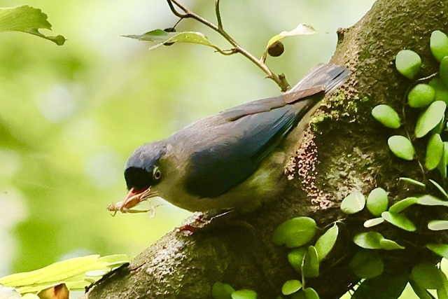
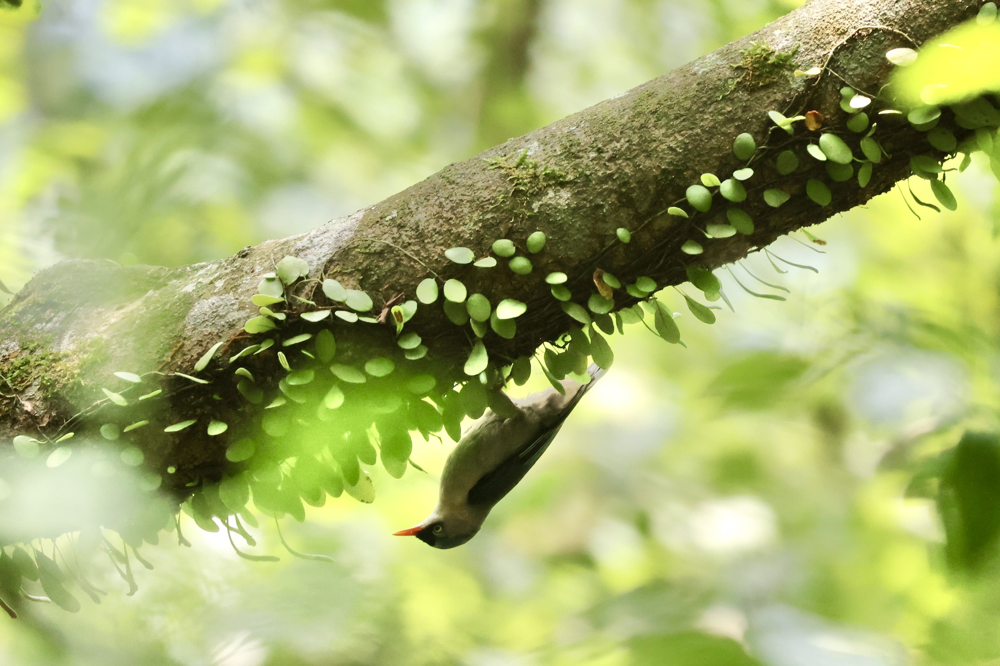
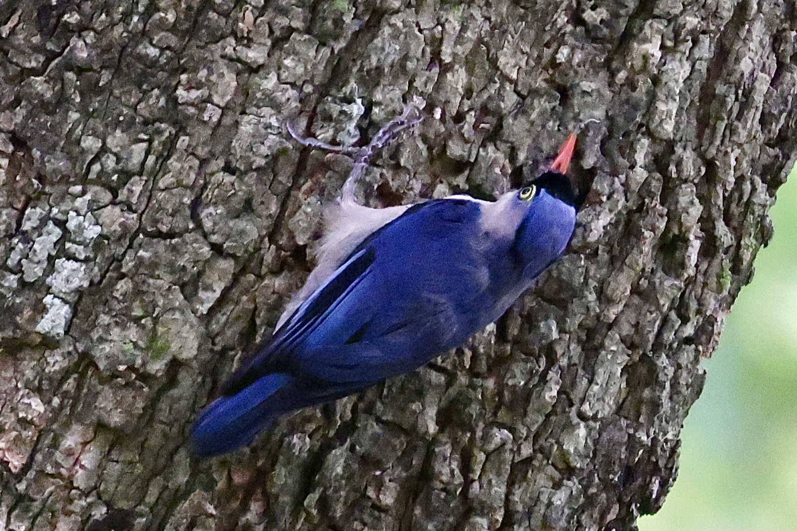

Velvet-Fronted Nuthatch
Sitta frontalis

A small blue bird with a black forehead and a slightly upturned red bill. Yellow irises. Male has a thin black supercilium, which the female lacks.

Nuthatches are the only birds that can climb down trees head first. Their scuttling movements have earned them the nickname "mountain rat" (山老鼠). And no, this image is not upside down.

Perhaps that long hind toe it the key to their acrobatics.